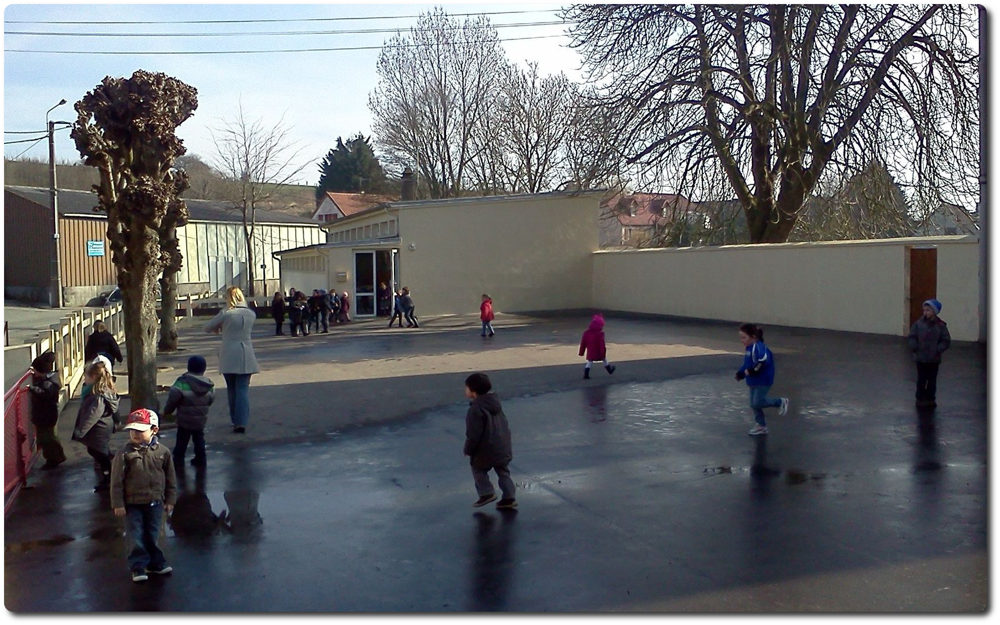
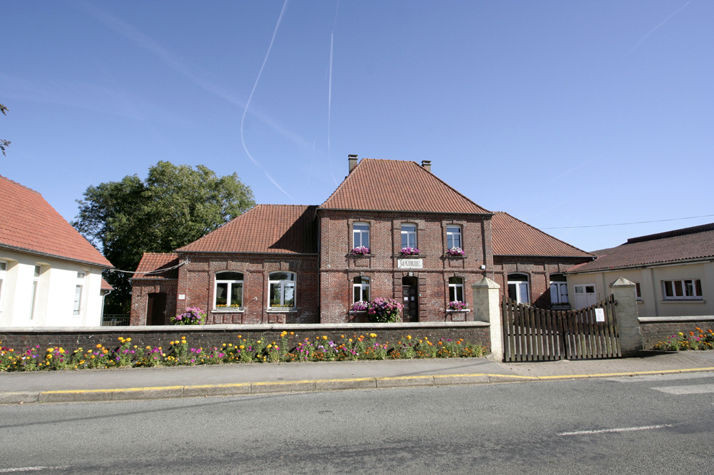

Le RPI
Les 3 écoles de Frencq sont regroupées au sein d'un R.P.I. avec les écoles d'Halinghen et de Widehem.
Les inscriptions se font auprès du directeur du RPI à l'école de Frencq (à coté de la mairie ( permanence le mardi )) 03 21 83 52 38
Le transport scolaire est assuré sur le territoire des trois communes.
Dans le cadre des compétences départementales, c'est le Conseil départemental du Pas-de-Calais qui assure les navettes. Avant, pendant et après le trajet, les enfants sont encadrés.

L'école de Widehem

L'école de Halinghen

L'école de Frencq située à coté de la mairie

L'école de Frencq située route de Boulogne

L'école de Le Turne